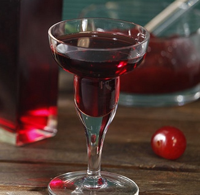

.png)
Višnja nas svojim grimiznim sočnim plodovima raduje od davnih vremena. Ona potiče iz severnih krajeva Indije i Irana i obožavana je još od antičkog doba. Jedna stara priča vezana za ovo koštunjavo voće svoje korene ima u jednom od najvećih svetskih duhovnih učenja, budizmu. Prema legendi, drvo višnje je svoje plodove ponudilo kao hranu Maji, majci Gautame Sidarte, budućeg utemeljivača pomenutog duhovnog puta. Veoma su je cenili i stari Rimljani i Persijanci, a i danas je sigurno jedan od omiljenih voćnih plodova. 
Višnja je veoma zastupljena u kulinarstvu i to na mnogo načina. Dostupna je u toku cele godine, sveža kada joj je sezona, a u drugim periodima se može čuvati smrznuta, kandirana sušena ili konzervirana. Spisak recepata u kojima se koriste višnje je podugačak, a svakako najpoznatiji i najdraži recepti u našim krajevima jesu tradicionalni i u narodu od davnina spremani kolači sa višnjama, kao i bezalkoholni i alkoholni napici. Lenja pita sa višnjama, običan kolač ili pita savijača redovno se mogu naći na kućnom repertoaru u ovim krajevima. Isti je slučaj sa gotovo nezaobilaznim i osvežavajućim sokom od višanja i svakako višnjevcem, slatkim i lekovitim likerom.
Cherry Brandy (31%) jedan je od najomiljenijih likera u svijetu. Specijalitet Maraske Zadar. Spravlja se iz prirodnog soka dalmatinske višnje maraske. Odlikuje ga slatkasti okus, umjerena gustoća i prirodna zagasito crvena boja zrele višnje maraske. Liker neodoljivo privlačnog mirisa i prijatnog voćnog ukusa, koji potiču od prirodnog voćnog koncentrata višnje. Sveža zagasito crvena boja ovog pića potpuno je u skladu sa izraženim ukusom zrele višnje, uz blagi ton gorčine na samom kraju, fino usklađenim sa slašću. Može se konzumirati u svim prilikama, samo ili kao dodatak mnogim koktelima. Preporučujemo ga i kao sastojak ili preliv za kolače i voćne sladolede.
Hercegovački Cherry Brandy je slatki liker koji se proizvodi odvišnje Maraske uzgojene u Hercegovini te je ujedno prvi Cherry Brandy proizveden od višnje uzgojene u Bosni i Hercegovini. Na području Hercegovine zbog klimatskih uvjeta i sastava tla višnja Maraska postiže iznimno visoku kvalitetu i vrlo je bogata neishlapivim aromatičnim tvarima što je osnovni preduvjet za kvalitetu i samog likera.
Liker od višnje je jedno od sada već tradicionalnih alkoholnih pića koji se sprema u načim krajevima. Kada se pripremala zimnica, ostavljala bi se šaka višanja u tegli sa šećerom, na nekom toplom osunčanom mestu, pa bi joj se dodalo i malo domaće rakije. Rezultat je opojno, slatko piće, domaći aperitiv u ukrašenoj starinskoj šoljici.
Višnjevac svoja blagotvorna svojstva duguje neverovatnim svojstvima samih višanja. Višnje pomažu protiv nesanice i pomažu da se bolje i kvalitetnije spava, jer sadrže veoma značajan antioksidans, melatonin, koji igra najvažniju ulogu kada je reč o snu. Neka istraživanja su pokazala da višnje deluju skoro kao prirodni aspirin ili ibuprofen, te da pomažu kod stanja poput gihta i artritisa. Takođe se savetuju i u ishrani sportista, jer doprinose bržem oporavku mišića nakon treninga. Ne samo to, višnje sadrže i antikancerogeni flavonid kvercetin, zbog čega se radi na istraživanju njihove potencijalne uloge u borbi protiv raka. Tamnocrveni plodovi višnje sadrže značajnu količinu vitamina C, važnog za imunitet i odbranu organizma od oboljenja. Sadrže i gvožđe, kalijum, cink, bakar i mangan.